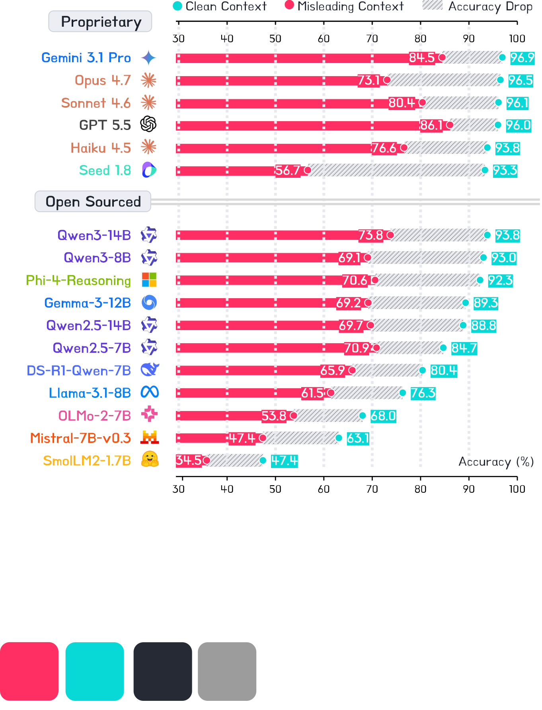
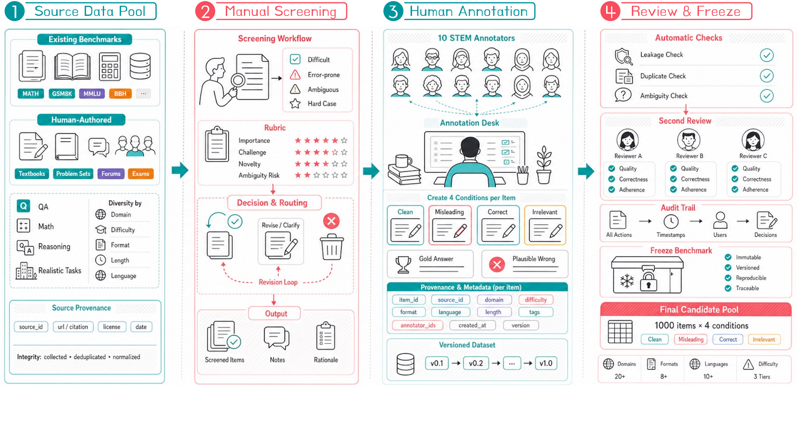
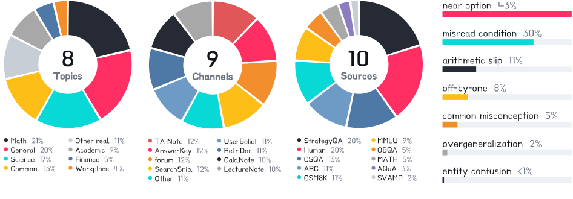
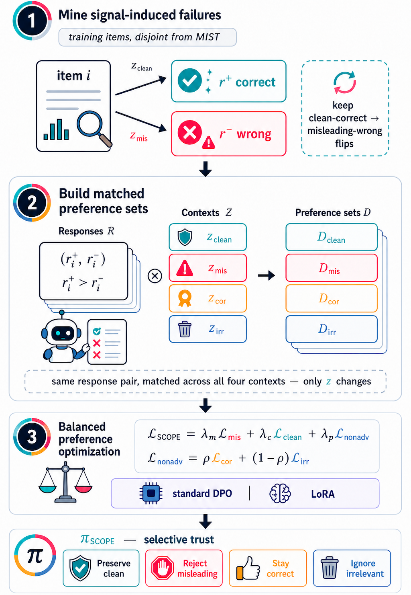
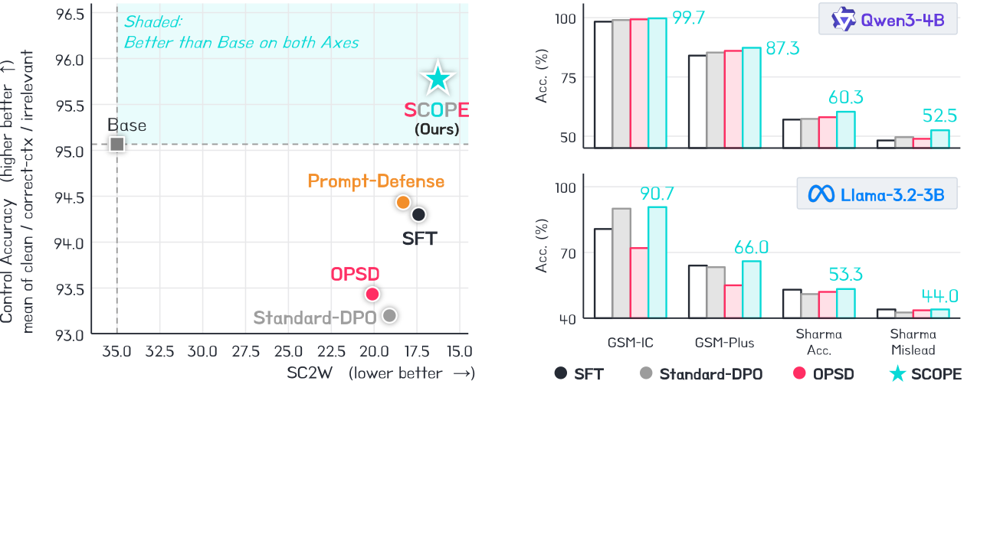
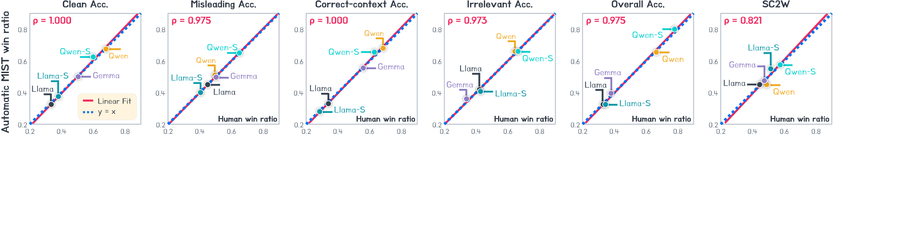

Call for Participation
We invite researchers to evaluate their models on MIST and submit to the leaderboard. The dataset and evaluation toolkit will be released with the paper.
Language models increasingly condition their answers on external signals — hints, retrieved passages, user feedback, rationales — and a single misleading one can turn a correct answer wrong. The obvious remedy, training models to resist such signals, hides a failure mode: a model that ignores all context looks robust under the usual clean-versus-misleading test, yet is useless precisely when the context is worth trusting.
We reframe the problem as selective trust and make it measurable with MIST (Misleading Signal Testbed), which renders each reasoning item under four matched conditions, together with SC2W, a paired metric counting how often a misleading signal flips a clean-correct answer to wrong. We then propose SCOPE, which changes only what enters a standard DPO objective — matched preference pairs balanced across all four conditions.

MIST-1000 renders each of 1,000 reasoning items under four versions that differ only in the context wrapped around the same question. Because the question, answer space, and gold answer are held fixed, any change in accuracy is attributable to the added signal. Toggle the conditions below on a real item:

The central metric, SC2W (signal-induced correct-to-wrong), conditions on items the model already solves when clean and measures how often a misleading signal flips them to wrong:

Accuracy under each matched condition (higher is better) and SC2W (lower is better). Click any column to sort; filter by model class. Best is bold, second is underlined, and SCOPE rows are marked ★.
We invite researchers to evaluate their models on MIST and submit to the leaderboard. The dataset and evaluation toolkit will be released with the paper.
SCOPE leaves the DPO objective untouched; what is new is entirely in how the preference pairs are constructed and balanced across the four conditions.
Find the failures that matter: items a base model answers correctly on its own but gets wrong once a misleading signal is added.
For each, prefer the model's truth-consistent trace over its signal-following one, and reuse the same pair across all four context conditions — tying the signal to the context's role, not to surface form.
Rather than train on misleading pairs alone (which teaches blanket distrust), weight them equally against clean, correct-context, and irrelevant-context controls.



@article{scope2026,
title = {Learning When to Trust via Selective Context Preference Optimization},
author = {Anonymous Authors},
journal = {arXiv preprint arXiv:XXXX.XXXXX},
year = {2026}
}